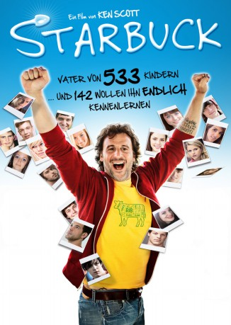

#3117 Starbuck
 gesehen am 02.02.2016
gesehen am 02.02.2016
 
 IMDB-Wertung: 7.3 / 10
IMDB-Wertung: 7.3 / 10  Metascore: 49
Metascore: 49 
Der 42jährige David Wozniak hat es in seinem Leben bisher nicht weit gebracht. Er arbeitet als Ausfahrer für die väterliche Metzgerei und hat ständig Geldsorgen - weshalb er 80.000 Dollar Schulden hat. Seine schwangere Freundin Valérie will sich von ihm trennen, da ihr Kind besser vaterlos aufwachsen soll als mit so einem Vater wie David. Doch als David eines Tages Besuch von einem Anwalt bekommt, ändert sich seine Leben schlagartig. Als junger Mann hat David unter dem Pseudonym 'Starbuck' in einer Klinik Sperma gespendet und wurde durch einen Fehler der Klinik Vater von 533 Kindern. 142 von ihnen wollen nun unbedingt ihren Erzeuger kennenlernen. David beschliesst, zu handeln...
Jahr: 2011
Dauer: 109 Minuten
FSK: 12
Land: Kanada Studio: Ascot Elite Entertainment GroupTonspuren: DTS - ,
Untertitel: Deutsch,
Auflösung: 1080p (1920x816) Größe: 7976 MB
Genre: Drama, Komödie
Regisseur: Ken Scott
Drehbuch: Ken Scott, Martin Petit
Soundtrack: David Lafleche
Darsteller:
- Patrick Huard als David Wozniak / Starbuck
- Julie LeBreton als Valérie
- Antoine Bertrand als Avocat
 Sarah-Jeanne Labrosse als Julie
Sarah-Jeanne Labrosse als Julie- Catherine De Sève als Lectrice de nouvelles
- Sebastien Beaulac als Homme de main #1
- François Aubin als Docteur
- Frédéric-Antoine Guimond als Partisan adverse
- Sébastien Rouleau als Préposé #2
- Dominic Philie als Frère sombre
- Marc Bélanger als Frère sympathique
- Igor Ovadis als Père de David
- David Michael als Antoine
- Patrick Martin als Étienne
- David Giguère als Porte parole
- Pierre Mailloux als Proprie café fe quartier
- Patrick Labbé als Maître Chamberland
- Marie-France Lambert als Infirmétre intervante
- Pascal Contamine als Équipier #2
- Félix Brassard als Julien
- Alex Vallée als Ricardo
- Frédéric Gosselin als Artisan 17e
- Félix-Antoine Tremblay als Sauveteur, Marcos
- Luc Pilon als Journaliste SRC
- Lise Thouin als Juge Grevier
- Maude Payette als Greffier
- Mathieu Gosselin als Équipier #1
- Annick Léger als Préposée clinique
- Joujou Turenne als Réceptionniste institut
- Laurent-Christophe De Ruelle als Coisier ado libroirie
- Denis Harvey als Col bleu #1
- Bonfield Marcoux als Directeur banque #3
- Joseph Bellerose als Directeur banque #4
- Sophie Caron als Infirmitre compatisante
- Daniel Malenfant als Vendeur de poussettes
- Linda Sauvé als Cliente #2 boucherie
- Fatma Noyan als Infirmotre échogrophie
- Lou Brassard als Enfant avocat, 4 ans
- Patrick Caux als Voleur de stationnement
- Maxime Després als David 18 ans
- André Lanthier als Avocat adverse
- André Umbriaco als Reverndeur #1
- Léa-Marie Cantin als Journaliste TVA
- Claude Tremblay als Directeur banque #1
- Nathalie D'Anjou als Directeur banque #2
- Fred-Eric Salvail als Infermier institut
- Marie-Noelle Mainguy als Cliente #1 boucherie
- Belkacem Lahbairi als Chauffeur taxi
- Daniel Desputeau als Employé #1 boucherie
- Chadi Alhelou als Équipier #3
Datei: X:\2011(N-Z)\Starbuck (2011, FSK12, 1920x816).mkv seit 28.01.2016
Festplatte: HD 2011(G-Z)
 Es gibt insgesamt 132 Filme in der Gruppe '2011(N-Z)'
Es gibt insgesamt 132 Filme in der Gruppe '2011(N-Z)'